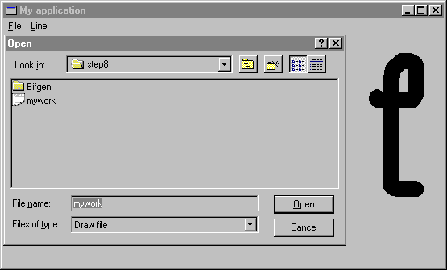

Step 8: Storing the drawing in a file
Since that you have got a data representation of the drawing, you should be able to transfer that data into a file and read it back. You will also use standard dialog boxes to get file names from the user.
You are going to use class STORABLE from EiffelBase to save and read data of the drawing. But first, you need to create the following abstraction in order to be able to save the linked list of points.
class LINES
inherit LINKED_LIST [LINE] STORABLE
creation make
end -- class LINES
In MAIN_WINDOW you need to change the definition of lines from:
lines: LINKED_LIST [LINE]
into:
lines: LINES
The application will show standard dialog boxes in response to the user's selection of Open and Save to get the file name which will be used for the operation. The following attributes need to be added in MAIN_WINDOW:
open_dialog: WEL_OPEN_FILE_DIALOG -- Standard dialog box to open a file. save_dialog: WEL_SAVE_FILE_DIALOG -- Standard dialog box to save a file.
Now, you are ready to implement Open and Save options in on_menu_command. Basically, the file name is retrieved from the standard dialog box and used to save (store_by_name) or read (retrieve_by_name) the data. Extension .DRW is adopted for the files (procedures set_filter and set_default_extension).
on_menu_command (menu_id: INTEGER) is
-- menu_id has been selected.
do
inspect
menu_id
...
when Cmd_open then
if open_dialog = void then
!! open_dialog.make
open_dialog.set_filter (<<"Draw file">>, <<"*.drw">>)
open_dialog.set_default_extension ("drw")
end
open_dialog.activate (Current);
if open_dialog.selected then
lines ?= lines.retrieve_by_name (open_dialog.file_name)
invalidate
end
when Cmd_save then
if save_dialog = void then
!! save_dialog.make
save_dialog.set_filter (<<"Draw file">>, <<"*.drw">>)
save_dialog.set_default_extension ("drw")
end
save_dialog.activate (Current)
if save_dialog.selected then
lines.store_by_name (save_dialog.file_name)
end
...
end
Figure 15 shows the standard open dialog box as it appears when the user chooses the Open option.
Figure 15

Here is the end of the tutorial, we hope that you have plenty of ideas to improve your application!